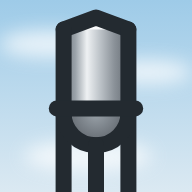

16px on white16px on white
16px on white16px on white 32px on white
32px on white
192px on white16px on white32px on white
192px on white 16px on dark page
16px on dark page 32px on dark page
32px on dark page 192px on dark page
192px on dark page 16px on dark browser chrome (#202124)
16px on dark browser chrome (#202124) 32px on dark browser chrome (#202124)
32px on dark browser chrome (#202124) 48px on dark browser chrome (#202124)
48px on dark browser chrome (#202124) 16px, light row
16px, light row 17px, light row
17px, light row 24px, light row
24px, light row 32px, light row
32px, light row 16px, dark row
16px, dark row 17px, dark row
17px, dark row 24px, dark row
24px, dark row 32px, dark row
32px, dark row clouds smudge in the corner
clouds smudge in the corner shipped: no clouds
shipped: no clouds